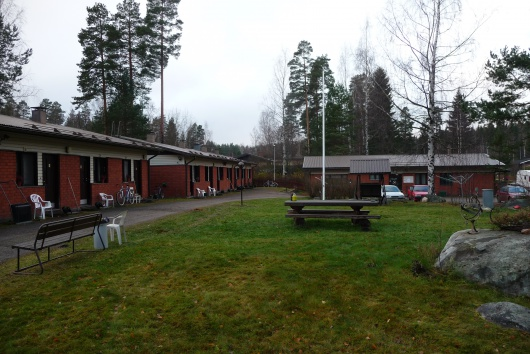
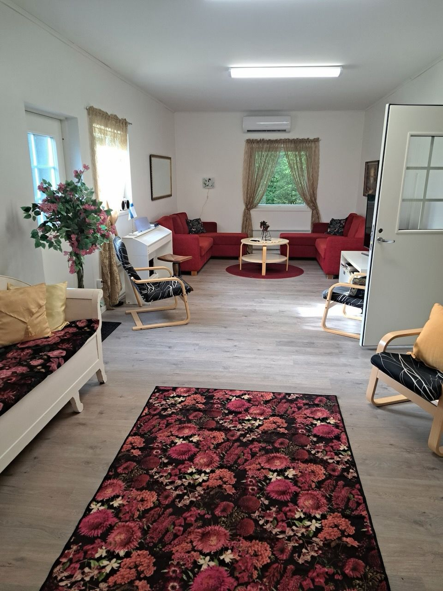
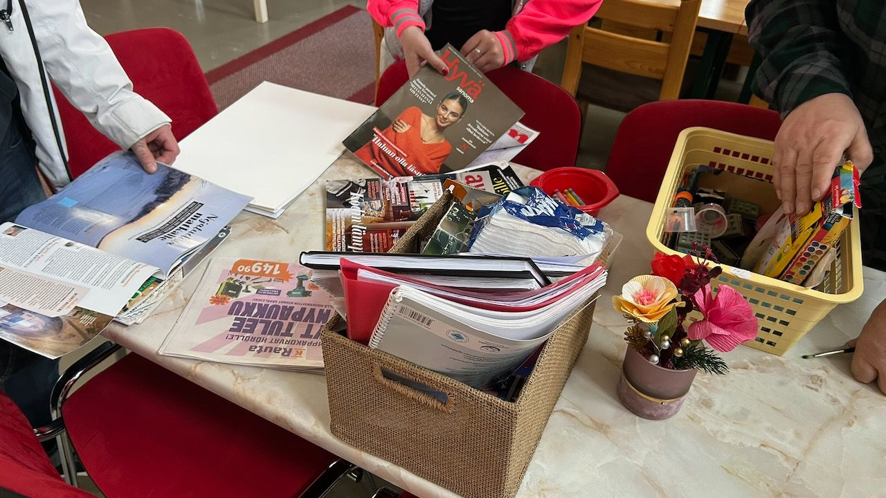

Jos etsit asiakkaallesi turvallista ja päihteetöntä asumispalvelua tai päihdekuntoutusta, ota yhteyttä suoraan johonkin Kan-kotiin ja kysy asumispaikkoja, tai soita toimistoomme 045 7870 1950 tai toiminnanjohtajallemme 040 769 2553.

Jyväskylän Kan-koti
Jyväskylän Kan-koti on tarjonnut asiantuntevaa ja yhteisöllistä kuntoutusta jo lähes kahden vuosikymmenen ajan Jyväskylän Kaunisharjussa. Yksikkömme sijaitsee rauhallisella omakotialueella, jossa on erinomaiset puitteet toipumiselle. Kan-kodilla on yhteensä yksitoista 30 m² rivitaloasuntoa, joissa on omat keittiöt ja saniteettitilat. Tilat tarjoavat kodinomaisen ympäristön sekä yhteisölliseen että tuettuun asumiseen. Kodin puitteisiin kuuluvat myös kuntosali, verstas, sauna sekä yhteinen päiväkeskus, joka toimii arjen toimintojen ja sosiaalisen kanssakäymisen sydämenä.
Asiakkaat
Jyväskylän Kan-koti on tarkoitettu päihde- ja mielenterveyskuntoutujille sekä rikollisesta elämäntavasta pois pyrkiville miehille, naisille ja pariskunnille. Toimimme tiiviissä yhteistyössä Rikosseuraamuslaitoksen kanssa ja otamme vastaan vankeja rangaistuksenaikaiseen kuntoutukseen, koevapauteen sekä valvontarangaistukselle. Tarjoamme turvallisen ympäristön, jossa asiakas voi valmistautua yhteiskuntaan paluuseen ja rikoksettomaan elämään.
Asumispalvelut: tuettu ja yhteisöllinen asuminen
Palvelumme on jaettu asiakkaan tarpeen mukaan tuettuun ja yhteisölliseen asumiseen, jotka molemmat perustuvat toipumisorientaation viitekehykseen:
- Tuettu asuminen: tarkoitettu itsenäisempään suoriutumiseen kykeneville asiakkaille, jotka tarvitsevat sosiaaliohjausta arjen hallintaan. Asuminen voi tapahtua joko Kan-kodin omissa asunnoissa tai asiakkaan omassa kodissa Jyväskylän seudulla. Tavoitteena on vahvistaa asiakkaan selviytymistä ja itsenäistymistä niin, että tuen tarve vähenee asteittain.
- Yhteisöllinen asuminen: tarkoitettu asiakkaille, joiden toimintakyky on alentunut ja jotka hyötyvät vahvasta yhteisöllisestä tuesta ja säännöllisestä sosiaalisesta kanssakäymisestä. Yhteisöllisessä asumisessa korostuvat yhdessä tekeminen, "me-henki" ja vertaistuki. Palvelu sisältää päivittäistä voimavarakeskeistä ohjausta, tukea ruoanlaitossa, kodin siisteydessä ja ihmissuhteiden ylläpitämisessä. Se toimii usein tärkeänä välivaiheena matkalla kohti itsenäisempää asumista.
Palvelupolku ja kuntoutus
Kuntoutuksemme on täysin päihteetöntä, ja valvomme tätä säännöllisillä puhallutuksilla ja huumeseuloilla. Palvelumme perustuu KAN ry:n strategian mukaiseen palvelupolku-malliin, joka muodostaa selkeän jatkumon kohti itsenäistymistä:
- Vahva tuki: intensiivinen kuntoutus ja osallistuminen päivittäiseen ohjelmaan.
- Perustuki: lisääntyvä vastuu arjen hallinnasta ja itsenäisestä toiminnasta.
- Kevyt tuki ja liikkuva tuki: valmistautuminen kotiutumiseen tai tuki asiakkaan omaan kotiin.
Hoito-ohjelma
Käytämme kuntoutuksessa kognitiivisia, ratkaisukeskeisiä ja voimavarakeskeisiä menetelmiä sekä motivoivaa haastattelua. Arkipäivien ryhmätoiminnot keskittyvät riippuvuustyöhön, elämänhallintaan, yhteiskuntavalmennukseen ja tunne-elämän taitojen vahvistamiseen. Jokaiselle asiakkaalle laaditaan yksilöllinen toteuttamissuunnitelma, jonka toteutumista seurataan säännöllisesti ammatillisin mittarein.
Arvot ja kristillisyys
Toimintamme ytimessä on ihmisarvo: jokainen on arvokas, ainutlaatuinen ja täynnä toivoa. Jyväskylän Kan-kodin kristillisyys on diakonista ja tukevaa – se ei ole käännyttävää, vaan tilaa antavaa. Tarjoamme turvallisen yhteisön pohtia elämän suuria kysymyksiä, mutta emme edellytä asiakkailta kristillistä vakaumusta. Tavoitteenamme on ihmisarvon palauttaminen ja usko muutokseen.
Liikkuva tuki
Osana palvelupolkuamme tarjoamme liikkuvaa tukea asiakkaan omaan kotiin Jyväskylän seudulla. Liikkuva tuki auttaa asiakasta ylläpitämään Kan-kodissa saavutettuja taitoja ja varmistaa päihteettömän elämäntavan jatkumisen omassa asuinympäristössä. Tukea voidaan tarjota myös uusille asiakkaille, jotka tarvitsevat apua itsenäisessä asumisessa.
Ammatillinen henkilöstö
Vastaamme toiminnastamme omavalvontasuunnitelman mukaisesti ja panostamme korkeaan ammatillisuuteen. Henkilöstömme koostuu sosiaali- ja terveysalan korkeakoulutetuista asiantuntijoista (sosionomi/AMK) sekä ammatillisista ohjaajista (lähihoitajat). Ammatillista työtä täydentävät vapaaehtoistyöntekijät ja kokemusasiantuntijat, jotka toimivat rinnallakulkijoina toipumisprosessissa.

Päijät-Hämeen Kan-koti
Päijät-Hämeen Kan-koti tarjoaa asiantuntevaa ja turvallista tuettua asumista Heinolan Lusissa. Yksikkömme sijaitsee historiallisessa kartanomaisemassa Ala-Pajujärven rannalla, tarjoten kuntoutujille rauhallisen ympäristön elämänmuutoksen tueksi.
Asiakkaat ja palvelupolku
Palvelumme on tarkoitettu 18 vuotta täyttäneille mielenterveys- ja päihdekuntoutujille. Toimintamme perustuu KAN ry:n strategian mukaiseen palvelupolku-malliin, jossa kuntoutuminen nähdään vaiheittaisena prosessina kohti itsenäisempää arkea:
- Vahva tuki: intensiivinen tuki ja osallistuminen päivittäiseen kuntoutusohjelmaan.
- Perustuki: lisääntyvä vastuu arjen hallinnasta ja asioinnista.
- Kevyt tuki: valmistautuminen täysin itsenäiseen asumiseen omassa kodissa.
Kuntoutus on määräaikaista ja tavoitteellista. Jokaiselle asukkaalle laaditaan yksilöllinen kuntoutussuunnitelma sekä viikko-ohjelma, joka sisältää ryhmätoimintaa, yksilökeskusteluja ja arjen taitojen harjoittelua rohkaisevassa yhteisössä.
Asunnot ja yhteistilat
Asukkailla on käytössään omat, 28–33 m² rivitaloasunnot, jotka mahdollistavat yksityisyyden ja oman tilan hallinnan. Kartanomiljöön yhteiset tilat – olohuone, keittiö ja saunatilat – sekä laajat piha-alueet luovat puitteet yhteisölliselle toiminnalle ja vertaistuelle.
Palvelun järjestäminen ja ammatillisuus
Toimintaamme ohjaavat Päijät-Hämeen hyvinvointialueen kanssa tehdyt puitesopimukset. Hyvinvointialueen psykososiaaliset palvelut tekevät arvion asiakkaan tarvitsemasta tuen tasosta. Vastaamme palvelun laadusta ja asiakasturvallisuudesta tiukan omavalvonnan ja jatkuvan kehittämisen kautta.
Henkilöstömme koostuu sosiaali- ja terveydenhuollon ammattihenkilöistä (sosionomi ja lähihoitajat), joilla on vankka osaaminen päihdetyön menetelmistä.
Luontoavusteinen kuntoutus
Osana kuntoutusohjelmaamme hyödynnämme kartanon upeaa luonnonympäristöä. Tarjoamme asukkaille luontoavusteista toimintaa, jonka tavoitteena on vahvistaa aisteja, tarjota onnistumisen kokemuksia ja edistää toimintakykyä. Käytössä on oma vene ja läheisessä saaressa sijaitseva laavu, jotka mahdollistavat uinti-, kalastus- ja retkeilymahdollisuudet ympäri vuoden.
Kulkuyhteydet
Vaikka Kan-koti sijaitsee luonnonrauhassa, Heinolan keskustan monipuoliset palvelut ja liikuntapaikat ovat saavutettavissa noin 18 kilometrin päässä.

Kortesjärven Kan-koti
Kortesjärven Kan-koti tarjoaa asiantuntevaa ja yhteisöllistä päihdekuntoutusta Etelä-Pohjanmaalla, Kauhavan Peltotuvalla. Yksikkö toimii rauhallisessa ympäristössä Fräntiläntien varrella, tarjoten erinomaiset puitteet toipumiselle ja uuden elämäntavan rakentamiselle. Kodin puitteet on hiljattain uudistettu, ja asiakkaiden käytössä on vasta remontoidut ja viihtyisät yhteistilat sekä kodinomaiset asunnot. Kortesjärven Kan-kodilla on yhteensä seitsemän asiakaspaikkaa, jotka jakautuvat tuettuun ja yhteisölliseen asumiseen.
Asiakkaat
Kortesjärven Kan-koti on tarkoitettu päihde- ja mielenterveyskuntoutujille sekä rikollisesta elämäntavasta pois pyrkiville miehille ja naisille. Yksikkö palvelee erityisesti asunnottomia kuntoutujia, ja toiminnassa korostuu tiivis yhteistyö hyvinvointialueiden, erityisesti Pohjanmaan kuntien kanssa. Tarjoamme turvallisen ja päihteettömän kasvuympäristön, joka tukee asiakasta matkalla kohti itsenäistä elämää ja yhteiskuntaan integroitumista.
Asumispalvelut: yhteisöllinen ja tuettu asuminen
Palvelumme on jaettu asiakkaan tarpeen mukaan yhteisölliseen ja tuettuun asumiseen, jotka muodostavat kuntouttavan jatkumon:
- Yhteisöllinen asuminen (4 asiakaspaikkaa): tarkoitettu asiakkaille, jotka hyötyvät vahvasta yhteisön tuesta ja säännöllisestä ohjauksesta. Jokaisella neljällä asukkaalla on käytössään oma asunto, jossa on keittiö ja omat saniteettitilat, mikä mahdollistaa yksityisyyden yhteisöllisen toiminnan rinnalla. Toiminnassa korostuvat "me-henki", vertaistuki ja päivittäinen voimavarakeskeinen ohjaus arjen askareissa.
- Tuettu asuminen (3 asiakaspaikkaa): suunnattu itsenäisempään elämään valmistautuville asiakkaille. Tavoitteena on vahvistaa asiakkaan elämänhallintaa ja asumistaitoja niin, että ulkopuolisen tuen tarve vähenee asteittain.
Palvelupolku ja kuntoutus
Kuntoutuksemme on täysin päihteetöntä, ja sitä valvotaan satunnaisilla päihdeseuloilla. Palvelu perustuu KAN ry:n palvelupolku-malliin, joka ohjaa asiakasta vaiheittain kohti vastuunottoa omasta elämästään:
- Vahva tuki: intensiivinen kuntoutus ja aktiivinen osallistuminen viikko-ohjelmaan.
- Perustuki: lisääntyvä vastuu omasta arjesta ja toiminnasta.
- Kevyt tuki ja jatkovaihe: valmistautuminen itsenäiseen asumiseen omassa kodissa.
Hoito-ohjelma ja toiminta
Käytämme kuntoutuksessa kognitiivisia, ratkaisukeskeisiä ja voimavarakeskeisiä menetelmiä. Viikko-ohjelma on monipuolinen ja sisältää muun muassa:
- Ryhmätoiminnot: riippuvuustyö, mielenterveysaiheet ja elämänhallinta.
- Yhteisöllinen tekeminen: retket laavuille, keilaaminen, pelit ja yhteiset kävelyt.
- Kuntouttava työtoiminta (3 paikkaa): mahdollisuus osallistua tavoitteelliseen ja toimintakykyä edistävään työtoimintaan yksikön tiloissa.
Jokaiselle asiakkaalle laaditaan yksilöllinen toteuttamissuunnitelma, jonka toteutumista seurataan säännöllisesti.
Arvot ja kristillisyys
Toimintamme pohjautuu kristilliseen ihmiskäsitykseen: jokainen ihminen on arvokas, ainutlaatuinen ja täynnä toivoa. Kortesjärven Kan-kodin kristillisyys on diakonista ja rinnalla kulkevaa. Arkeen kuuluvat vapaaehtoiset aamuhartaudet ja hengelliset keskustelut, jotka tarjoavat turvallisen tilan elämän suurten kysymysten pohtimiselle ilman käännyttämistä.
Kotihoito ja tukipalvelut
Asiakkaan tarpeen mukaan voimme tuottaa myös kotihoitoa sekä tukipalveluja (kuten ateria-, vaatehuolto- ja siivouspalveluita), jotka helpottavat arjessa selviytymistä ja edistävät kuntoutumista.
Ammatillinen henkilöstö
Vastaamme toiminnastamme omavalvontasuunnitelman mukaisesti ja panostamme korkeaan laatuun. Henkilöstömme koostuu sosiaali- ja terveysalan ammattilaisista, mukaan lukien sosionomin (AMK) ja lähihoitajat. Ammatillista tiimiä täydentävät vapaaehtoistyöntekijät ja naapuriseurakuntien yhdyshenkilöt, jotka toimivat tukena kuntoutusprosessin eri vaiheissa.

Avokuntoutus
Avokuntoutus on osa KAN ry:n kokonaisvaltaista palvelupolku-mallia, joka muodostaa jatkumon matkalla kohti itsenäistä elämää. Se on suunnattu päihteettömyyteen motivoituneille henkilöille, jotka tarvitsevat tukea arjen rytmiin, elämänhallinnan vahvistamiseen ja pysyvään elämäntapamuutokseen. Toiminta perustuu toipumisorientaatioon, jossa keskiössä ovat asiakkaan omat voimavarat, osallisuus ja toivo.
Viimeisen kahden vuoden ajan avokuntoutusta on toteutettu Lahden keskustassa Kan-kellari -nimellä. Taloudellisten realiteettien vuoksi toiminta Lahdessa jouduttiin laittamaan tauolle kesällä 2026, mutta avokuntoutuksen kehittäminen jatkuu Heinolassa toteutetun onnistuneen pilotin pohjalta. Tavoitteenamme on rakentaa joustavia ja vaikuttavia avopalveluita, jotka vastaavat hyvinvointialueiden muuttuviin tarpeisiin.
Avokuntoutuksen sisältö
Kuntoutus on tavoitteellista ja suunnitelmallista toimintaa, joka sisältää:
- Yksilöllinen toteuttamissuunnitelma: jokaiselle asiakkaalle laaditaan oma suunnitelma, jossa määritellään kuntoutumisen tavoitteet ja seuranta.
- Arjen hallinnan vahvistaminen: harjoitellaan käytännön taitoja, kuten ruoanlaittoa, asiointia, taloudenhoitoa ja viikko-ohjelman rakentamista.
- Ryhmätoiminnot ja yhteisöllisyys: vertaistuki ja yhdessä tekeminen (esim. Paussi-ryhmä) ovat keskeisiä menetelmiä muutoksen tukena.
- Toiminnallisuus, liikunta ja kulttuuri: hyödynnetään paikallisia verkostoja, luontoa ja kulttuuripalveluita osana toipumisprosessia.
- Jatkovaiheen tuki: kuntoutusjakson jälkeen on mahdollisuus osallistua viikoittaisiin vertaistukiryhmiin päihteettömyyden ylläpitämiseksi.
Toimintatapa ja menetelmät
Avokuntoutuksessa käytetään kognitiivisia, ratkaisukeskeisiä ja voimavaralähtöisiä menetelmiä sekä motivoivaa haastattelua. Työote on yhteisöllinen: tavoitteena on vahvistaa asiakkaan omaa toimijuutta ja itsemääräämisoikeutta.
Teemme tiivistä verkostoyhteistyötä hyvinvointialueiden, järjestöjen, seurakuntien ja muiden paikallisten toimijoiden kanssa. Toiminnassa hyödynnetään myös luontolähtöisiä menetelmiä, ja Heinolassa tapahtuvan toiminnan osalta hyödynnetään paikallisen Kan-kodin tarjoamia puitteita ja ympäristöä.
Ammatillinen henkilöstö
Avokuntoutuksen toteutuksesta vastaa moniammatillinen tiimi, joka koostuu sosiaali- ja terveysalan ammattilaisista (kuten sosionomit ja lähihoitajat). Ammatillista työtä täydentävät koulutetut kokemusasiantuntijat ja vapaaehtoistyöntekijät, jotka toimivat rinnallakulkijoina. Henkilöstön osaamista ja työssä jaksamista tuetaan säännöllisellä työnohjauksella ja täydennyskoulutuksella.